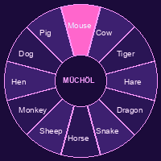

12.08.2004

|
|
|
Important!!! This page is for fun. Father Yakob from our church said müchöl is OK because it is our tradition and it counts age, but fortune-telling is a sin. So I don't tell fortunes here. I only write what the old people say about each animal. If you want to know your future, pray, or ask your mother, she knows everything anyway. The twelve animalsOur year does not start on 1 January but in spring, at Nooruz (in the city most people use 1 January now, but my grandmother says that is wrong).
The müchöl ageWhen you turn 12, 24, 36, 48, 60, 72, your animal comes back. The old people say this year is dangerous, so you give away some of your clothes (I gave my favourite jacket to my cousin when I was 12, I am still sad) and you go to the priest for a blessing. Then it is fine. 2004 - Year of the MonkeyMonkey year = funny surprises. So far this year: my sister got married, the electricity in our building was off 9 days, and I got into the TSU preparatory course. So: yes, surprises. Write me your animal: nurperi_04@attelkom.net |